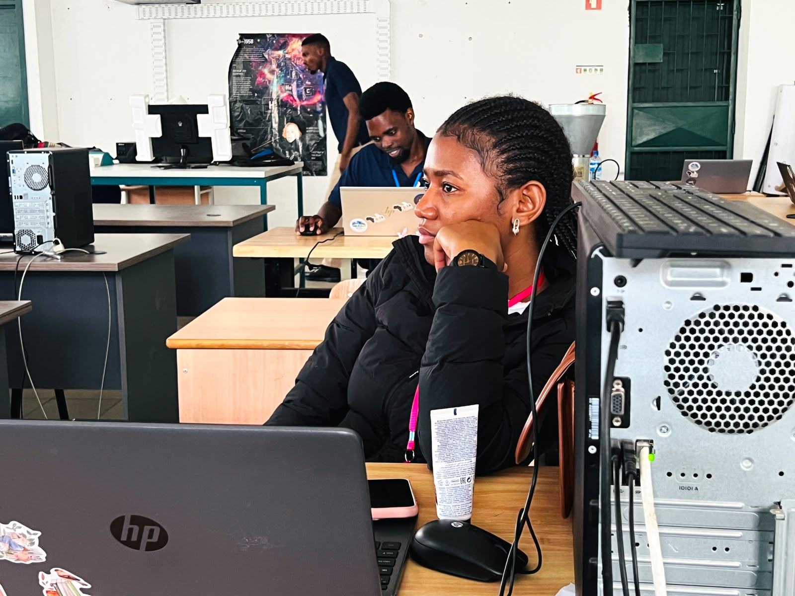

01
Observação da Terra
Utilização de dados de satélite para observar a superfície terrestre e acompanhar fenómenos ambientais.
 EYES TO EARTH
EYES TO EARTH
EYES TO EARTH — STUDENT WORKSHOP 2
Ciência, tecnologia e inovação para compreender os recursos hídricos e apoiar a monitorização ambiental.
SOBRE O EVENTO
O EYES TO EARTH — Student Workshop 2 foi um espaço de aprendizagem, partilha de conhecimentos e troca de experiências sobre a utilização da Observação da Terra e da Inteligência Artificial na monitorização da água.
O encontro reuniu 12 participantes de diferentes níveis académicos e áreas de formação, promovendo o contacto com ferramentas, conceitos e aplicações tecnológicas relevantes para os desafios ambientais.
Ao longo das actividades, foram exploradas aplicações de dados de satélite, modelos de Inteligência Artificial, qualidade da água e previsão de cheias, incluindo momentos práticos e a demonstração da plataforma EYES TO EARTH.
LOCAL DO ENCONTRO
O Workshop 2 teve lugar na Universidade Eduardo Mondlane, Faculdade de Ciências, Departamento de Física, no Laboratório de Astronomia, em Maputo, Moçambique.
Foi neste espaço académico que os participantes desenvolveram actividades de aprendizagem, diálogo científico e exploração de aplicações da Observação da Terra.
APRENDIZAGEM E INOVAÇÃO
Conhecimentos e ferramentas para compreender os recursos hídricos através de dados de satélite e Inteligência Artificial.
Utilização de dados de satélite para observar a superfície terrestre e acompanhar fenómenos ambientais.
Exploração de modelos de Inteligência Artificial aplicados à análise de dados e à monitorização da água.
Discussão sobre indicadores, dados e possibilidades de utilização de ferramentas digitais na avaliação da qualidade da água.
Introdução às aplicações de dados de satélite e modelos computacionais no acompanhamento e previsão de cheias.
Importância da avaliação do desempenho dos modelos e da interpretação dos seus resultados.
Exercícios, demonstrações e partilha de experiências para aproximar os participantes das ferramentas apresentadas.
CONTEXTO AMBIENTAL E HISTÓRICO
O rio Incomáti constitui um importante sistema fluvial da região sul de Moçambique. A observação das suas águas e das áreas envolventes pode contribuir para compreender mudanças ambientais, acompanhar condições hídricas e apoiar a gestão dos recursos naturais.
A Observação da Terra, através de imagens de satélite, permite acompanhar áreas extensas e observar alterações na superfície, incluindo zonas ribeirinhas e áreas potencialmente afectadas por cheias.
Marracuene é também um lugar de relevância histórica. A 2 de Fevereiro de 1895, ocorreu neste território a Batalha de Marracuene, no contexto da resistência à ocupação colonial portuguesa.
Durante o período colonial, a localidade foi também conhecida pelo nome de Vila Luísa. A sua história integra a memória da resistência e das transformações políticas e sociais da região.
Marracuene e o rio Incomáti são apresentados neste website como contexto geográfico, ambiental e educativo. O Workshop decorreu na Universidade Eduardo Mondlane, em Maputo.
As imagens de satélite ajudam a acompanhar mudanças na paisagem e a explorar questões relacionadas com a água, o território e os riscos ambientais.
FERRAMENTAS DIGITAIS
Durante o Workshop foi apresentada a plataforma EYES TO EARTH, uma ferramenta que aproxima os participantes das possibilidades de utilização de dados e tecnologias digitais na exploração de questões ambientais.
A demonstração permitiu apresentar algumas das funcionalidades da plataforma e incentivar a sua exploração como recurso de aprendizagem e experimentação.
Explorar a plataformaMOMENTOS DO EVENTO
Alguns momentos de aprendizagem, partilha e participação no EYES TO EARTH — Student Workshop 2.




As fotografias devem ser publicadas com a devida autorização das pessoas identificáveis.
RECURSOS DE APRENDIZAGEM
Consulte os materiais de apoio utilizados e disponibilizados no âmbito das actividades de aprendizagem.
Material de revisão do primeiro Workshop.
Conteúdos sobre avaliação e qualidade dos modelos.
Aplicações da Inteligência Artificial na monitorização da água.
Apresentação da plataforma EYES TO EARTH.
A ciência aproxima-nos, inspira-nos e abre caminhos para transformar realidades.
EYES TO EARTH — Student Workshop 2